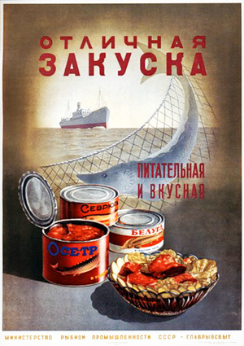
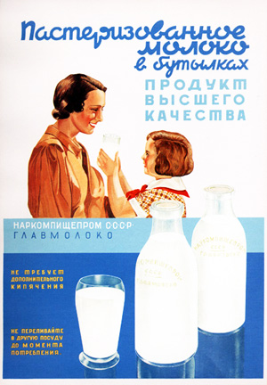
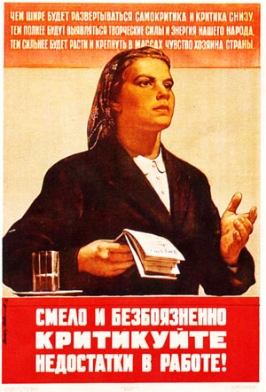
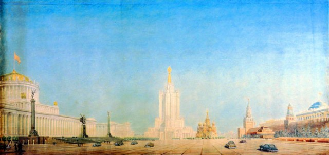

http://i-sergeev.livejournal.com/136306.html
i_sergeev
Сталинизм – "назад в прошлое"? Нет, назад в будущее!
Говоря об эпохе Сталина, превознося успехи СССР, мы обычно имеем в виду индустриализацию. Действительно, таких темпов экономического развития не было никогда и нигде в мире.
Никогда и нигде в мире промышленное производство не прирастало более чем на 16% ежегодно на протяжении более чем десятилетия.
Никогда и нигде в мире за десять лет производство стали не вырастало более чем в 4 раза, электроэнергии – более чем в 8 раз, станков – в 25 раз, тракторов – более чем в 40 раз, комбайнов с более чем в 120 раз, автомобилей в 250 раз и т.д. и т.п. Не создавались в рекордные сроки целые новые отрасли промышленности – химической, рыбной, приборо- и станкостроения, подшипниковой, авиационной, холодильной и т.д. и т.п.
Продолжать можно очень долго, но все это хорошо известно, потому и смысла нет повторять.
Однако за всей этой действительно впечатляющей картиной мы как-то совсем забываем о тех изменениях, которые произошли в повседневной жизни людей, психологии, организации социальной жизни. А между тем эти изменения были ничуть не менее фантастическими.
Заметили? Говоря об эпохе Сталина, мы говорим о ней как о «добром старом времени». «Добром», но при этом и «старом». Одно слово, ретро.
А между тем эпоха эта была вовсе не «ретро». Это была эпоха поистине
футуристическая, как если бы людей на космическом корабле перенесли на другую
планету. Или на машине времени забросили бы на сотни лет в будущее.
Именно так эта эпоха воспринималась современниками. И чтобы правильно понимать
сталинизм, мы должны попытаться увидеть эпоху Сталина не глазами сегодняшнего
человека, из будущего с гаджетами, а глазами современника.
Ведь каждую эпоху нужно видеть в системе координат своего времени, исходя из реалий своего времени.
А изменения были грандиозными. Люди фактически разом оказались в будущем. И ведь прошло всего двадцать лет, каких-то двадцать лет с 1917 до 1937 года, а по изменениям – триста или пятьсот лет. И все это происходило на глазах одного поколения! Люди, которые еще вчера ходили в лаптях за сохой и грелись на печи при свете лучины, оказались посреди высотных домов и широких проспектов, освещенных электрическими фонарями, грандиозных набережных и парков, ультрасовременной системы общественного транспорта, коммуникаций, бытового обслуживания, новейшей системы общественного питания, организации труда, горячей воды и центрального отопления, охраны общественного порядка и организации досуга, доступных морских курортов, самой передовой в мире системы среднего, средне-технического и высшего образования, медицинского обслуживания, гигиены, кино, библиотечной системы, новых, невиданных прежде товаров и продуктов, включая, самые казалось бы мелочи – газированную воду, мороженое, сосиски и колбасы высочайшего качества, но при этом промышленного, массового производства, полуфабрикаты, морскую рыбу, о которой прежде не знали в континентальной России, и морепродукты – те же крабы в банках – мясные, рыбные и овощные консервы, замороженные овощи и фрукты, соки, майонез, шампанское...
Ничего этого еще вчера не было. И вдруг разом все появилось. Даже такие странные предметы как презервативы, производство которых в СССР было налажено в 1936 году (если кто не знает) – при всех масштабах индустриального строительства не забыли и об этих маленьких резиновых изделиях!
 Вспомним, как в конце 1980-х стояли очереди на Пушкинской к Макдональдсу – ну
как же, передовые технологии общепита! А между тем впервые гамбургеры появились
на московских улицах в 1930-х годах, но в то время не были восприняты советскими
гражданами (не оценившими по достоинству их «инновационность»), и проект
пришлось свернуть. Даже виски и джин производились в сталинском СССР. Зачем,
казалось бы?
Вспомним, как в конце 1980-х стояли очереди на Пушкинской к Макдональдсу – ну
как же, передовые технологии общепита! А между тем впервые гамбургеры появились
на московских улицах в 1930-х годах, но в то время не были восприняты советскими
гражданами (не оценившими по достоинству их «инновационность»), и проект
пришлось свернуть. Даже виски и джин производились в сталинском СССР. Зачем,
казалось бы?
Конечно, общественное сознание не могло угнаться за таким социально-экономическим и техническим прогрессом (по выражению великовозрастного студента в фильме «Старый новый год»: «Отстает сознание от технического прогресса!»). Эту мещанскую отсталость высмеивали Ильф и Петров, Зощенко и Булгаков. Смеяться легко. Ну, а каково было бы нам, если бы нас сейчас перебросили разом на триста лет в будущее? (Если, конечно в будущем человечество ожидает прогресс, а не деградация.)
«За 1928-1940 годы почти вдвое увеличилась численность городского населения. Этот рост был обусловлен прежде всего форсированным строительством новых индустриальных предприятий и притоком сельского населения в города. Доля занятых в сельском хозяйстве сократилась с 80 % всего работающего населения в 1928 году до 54 % в 1940 году». (Труд в СССР. М., 1968. С. 20)
Совершенно справедливы слова из Марша Энтузиастов:
«Создан наш мир на славу, за годы сделаны дела столетий…»
И это никакое не преувеличение, и не поэтический образ, а точное отражение реальности:
Счастье берем по праву
и жарко любим и поем как дети!
И звезды наши алые сияют небывалые
Над всеми странами, над океанами
Осуществленною мечтой.
И тем не менее, главная ошибка сталиниста сегодня – это ностальгировать по прошлому, роняя «скупую слезу» по доброму старому времени.
Для того чтобы понять сталинизм, нужно не столько изучать прошлое (и уж тем более не ностальгировать по нему), сколько попытаться эстраполировать тот вектор развития в наши дни, в современность и попытаться представить, каких успехов достигла бы наша страна сегодня. Наверное, действительно как в песне «на Марсе бы уже сады цвели».
 Вторая
главная ошибка – воспринимать сталинизм только лишь как модель мобилизационной
экономики. Да, в тяжелейшие предвоенные годы сталинизм показал свою способность
мобилизовать, объединить усилия всего народа ради сохранения государства и самой
нации. Но не в этом его смысл и цель. Полагать сталинизм только лишь способом
самосохранения государства и нации – значит… ну все равно что говорить о
самолете только лишь как о месте? где можно укрыться от града или дождя под
крылом – да, можно, но не в этом смысл самолета!
Вторая
главная ошибка – воспринимать сталинизм только лишь как модель мобилизационной
экономики. Да, в тяжелейшие предвоенные годы сталинизм показал свою способность
мобилизовать, объединить усилия всего народа ради сохранения государства и самой
нации. Но не в этом его смысл и цель. Полагать сталинизм только лишь способом
самосохранения государства и нации – значит… ну все равно что говорить о
самолете только лишь как о месте? где можно укрыться от града или дождя под
крылом – да, можно, но не в этом смысл самолета!
Сам И.В.Сталин в 1929 году так сказал о мобилизационной экономике: «Мы отстали на 50-100 лет от передовых стран. Мы должны преодолеть этот разрыв за десять лет. Иначе нас сомнут». Ключевые слова здесь «иначе нас сомнут». То есть это была вынужденная модель. Это был адекватный ответ на угрозу близкой и реальной войны, не гипотетической как сегодня, а реальной и близкой. И сталинизм решил эту задачу, но это была ситуация вынужденная, критическая.
Или, например, гражданская война 1937-38 гг. Это был вынужденный ответ на угрозу троцкизма и создания «пятой колонны». Сталинизм оказался достаточно сильной системой чтобы ликвидировать эту угрозу, но сам по себе он не имеет к ней никакого отношения, как река Тунгуска к упавшему на нее метеориту.
Так что говорить о том, что сталинизм – это «рабочие, которые вкалывают с утра и до ночи, ночуя под старой телегой, чтобы завтра здесь был город-сад» – глупость полнейшая. Это были вынужденные меры и к сталинизму они не имеют отношения. Реальные же задачи сталинизма иные, не подготовка к войне, а:
«Обеспечение максимального удовлетворения постоянно растущих материальных и культурных потребностей всего общества путем непрерывного роста и совершенствования социалистического производства на базе высшей техники».
Так сформулировал сам И.В. Сталин в своей работе «Экономические проблемы социализма в СССР» (1952 г.). Именно эта работа дает ключ к пониманию того, как следует организовывать жизнь сегодня, исходя из принципов сталинизма.
Не ностальгические воздыхания о прошлом, а устремление в будущее – вот что такое сталинизм сегодня. Ведь по существу Сталин не имел возможности развивать страну в нормальных условиях. Сначала грозные предвоенные годы, лихорадочная подготовка страны к величайшей в истории войне, потребовавшая напряжения всех сил. Затем война, и снова напряжение всех сил. Потом послевоенное восстановление.
И только к 1953 году страна наконец получила возможность развиваться в более или менее нормальных и естественных условиях. И в этот момент убивают Сталина. Мы собственно и не видели на практике сталинизм, мы можем его только вообразить.
Что же такое сегодня сталинизм? Ответы есть, их не нужно придумывать, все написано, сказано в той же статье «Экономические проблемы социализма в СССР», ставшей по сути завещанием Сталина.
 Сталинизм
сегодня – это прежде всего хай-тек, новейшие технологии, которые будут по
настоящему прогрессивными только в том случае, если будут служить основному
экономическому закону социализма (см. выше). А значит:
Сталинизм
сегодня – это прежде всего хай-тек, новейшие технологии, которые будут по
настоящему прогрессивными только в том случае, если будут служить основному
экономическому закону социализма (см. выше). А значит:
«Вместо обеспечения максимальных прибылей, – обеспечение максимального удовлетворения материальных и культурных потребностей общества; вместо развития производства с перерывами от подъема к кризису и от кризиса к подъему, – непрерывный рост производства; вместо периодических перерывов в развитии техники, сопровождающихся разрушением производительных сил общества, – непрерывное совершенствование производства на базе высшей техники». (И.В. Сталин «Экономические проблемы социализма в СССР», 1952 г.)
Согласно этой работе, повышение уровня жизни должно достигаться не только за счет роста заработной платы, но и за счет снижения цен на товары. Инфляция? Значит, прогресса нет! Цены должны снижаться, а не повышаться, с тем чтобы постепенно некоторые продукты становились бесплатными (сделать хлеб бесплатным предполагалось уже к началу 1960-х годов).
У нас же сейчас обратная ситуация – зарплаты растут, да, но цены растут еще быстрее. И где же прогресс? Зато «увеличение денежной массы как показатель роста благосостояния», экономисты хреновы!
Согласно сталинской работе, показателем экономического прогресса является уменьшение рабочего времени. Работаем ли мы сегодня меньше, чем десять или двадцать лет назад? Проводим ли мы меньше часов на работе? Нет. А значит, прогресса никакого нет! Если бы сталинизм не был демонтирован, сегодня мы бы работали по три-четыре часа в день или меньше, все остальное время посвящая самообразованию, культурному досугу, физкультуре и спорту, духовному развитию и семье. Это предполагалось еще в 1952 году (читайте!).
Сталин утверждал, что оплата труда должна напрямую зависеть от его квалифицированности. Никакой уравниловки!
«Здесь Энгельс запутал наших людей. Он неправильно считал, что при социализме все – и квалифицированные и неквалифицированные люди, руководители и исполнители должны получать по-среднему. Есть разница между трудом простым и квалифицированным в условиях социализма. Об этом надо сказать. Хозяйство не будет иметь границ, если платить по-разному». (И.В. Сталин. Беседа об учебнике «Политическая Экономия», 29 января 1941 г.)
Это значит, что специалист с высшим образованием (если его труд действительно приносит пользу стране, а не просто просиживание штанов) должен получать в десять, двадцать раз больше, чем человек, выполняющий неквалифицированную работу. Сегодня же мы видим, что оплата труда зависит от места работы, города проживания, но никак не от квалификации. А значит, никакого прогресса нет! Вот если бы инженер, ученый, геолог, конструктор, врач или учитель, наконец, получал бы сегодня сто или двести тысяч рублей в месяц при средней зарплате пятнадцать тысяч по стране – это был бы сталинизм. И это был бы очень большой стимул повышать свое образование и профессиональную квалификацию. Для всех. Вот вам и двигатель общественного прогресса. И незачем придумывать какие-то «креативные классы», модельеров лобковых стрижек и прочих бездарных и безграмотных «специалистов» по обслуживанию таких же бездарных и безграмотных паразитов общества – нынешних «хозяев жизни».
 «Необходимо… добиться такого культурного роста общества, который бы обеспечил
всем членам общества всестороннее развитие их физических и умственных
способностей, чтобы члены общества имели возможность получить образование,
достаточное для того, чтобы стать активными деятелями общественного развития,
чтобы они имели возможность свободно выбирать профессию, а не быть прикованными
на всю жизнь, в силу существующего разделения труда, к одной какой-либо
профессии».
«Необходимо… добиться такого культурного роста общества, который бы обеспечил
всем членам общества всестороннее развитие их физических и умственных
способностей, чтобы члены общества имели возможность получить образование,
достаточное для того, чтобы стать активными деятелями общественного развития,
чтобы они имели возможность свободно выбирать профессию, а не быть прикованными
на всю жизнь, в силу существующего разделения труда, к одной какой-либо
профессии».
«Что было бы, если бы не отдельные группы рабочих, а большинство рабочих подняло свой культурно-технический уровень до уровня инженерно – технического персонала? Наша промышленность была бы поднята на высоту, недосягаемую для промышленности других стран. Следовательно, нельзя отрицать, что уничтожение существенного различия между умственным и физическим трудом путем поднятия культурно-технического уровня рабочих… не может не иметь для нас первостепенного значения». (И.В. Сталин «Экономические проблемы социализма в СССР», 1952 г.)
Система выборов – отдельная тема. Вот что сказал об этом И.В. Сталин:
«Построил ли ты или не построил хорошую школу? Улучшил ли ты жилищные условия? Не бюрократ ли ты? Помог ли ты сделать наш труд более эффективным, нашу жизнь более культурной? Таковы будут критерии, с которыми миллионы избирателей будут подходить к кандидатам, отбрасывая негодных, вычеркивая их из списков, выдвигая лучших и выставляя их кандидатуры.
Да, избирательная борьба будет оживленной, она будет протекать вокруг множества острейших вопросов, главным образом вопросов практических, имеющих первостепенное значение для народа.
Всеобщие, равные, прямые и тайные выборы в СССР будут хлыстом в руках населения против плохо работающих органов власти. Наша новая советская конституция будет, по-моему, самой демократической конституцией из всех существующих в мире.» (И.В. Сталин «Беседа с председателем американского газетного объединения “Скриппс-Говард Ньюспейперс” господином Рой Говардом. Опубликовано: Правда. 5 марта 1936 года.)
Таким образом, выборы – это не выбор из трех-четырех сортов говна по признаку консистенции и запаха, что тверже и меньше воняет. По сути выборы – это аттестация чиновников, которую проводят избиратели – народ. Нерадивых чиновников он увольняет и на их место выдвигает других. Поэтому Сталин и призывал «активнее выдвигать кандидатов». Чтобы было кому занять ставшую вакантной должность. В этом контексте рассуждения типа «все равно выбирать не из кого», «остальные – говно еще хуже», «если не этого, то кого» никак не прокатывают. Выборы – это не выбор меньшего зла, а народная аттестация. Именно в этом смысл выборов с позиций сталинизма.
В таком случае самоотвод или самоневыдвижение, как Медведева на нынешних президентских выборах, следует считать недопустимым – как попытку уклониться от аттестации. А недопустимым – значит, уголовно наказуемым. Вот так.
 И так
далее. Тема эта слишком обширна, чтобы ее можно было вместить в одну статью.
Главное, что я хочу сказать – это то, что сталинизм не призыв к возврату в
прошлое, а оружие современности.
И так
далее. Тема эта слишком обширна, чтобы ее можно было вместить в одну статью.
Главное, что я хочу сказать – это то, что сталинизм не призыв к возврату в
прошлое, а оружие современности.
Это средство модернизации страны, экономического и социального прогресса, улучшения жизни людей. «Всего общества», без привилегированных классов – как об этом сказал И.В. Сталин.
P.S. Между прочим, я лично сторонник ренационализации, но все же замечу, что
в формулировке экономического закона социализма Сталин ни единым словом не
упоминает общественную собственность на средства производства. Скажете, забыл
или посчитал очевидным? Ничего подобного! Закон на то и закон, что в его
формулировке не может быть ни единого лишнего слова и ни единого недостающего.
Закон следует понимать буквально, именно так как он записан, без трактовок и
интерпретаций. Слово «социалистический» не тождественно по смыслу слову
«общественный». А это значит, что форма собственности не так важна, сколько
важны цели, которым служит экономика. Известно, например, что при Сталине в СССР
было 114 тысяч частных артелей. Или, как бы сейчас сказали, «предприятий малого
бизнеса». На них работало около двух миллионов человек, которые производили
почти 6% валовой продукции промышленности СССР, причем артелями и
промкооперацией производилось 40% мебели, 70% металлической посуды, более трети
всего трикотажа, почти все детские игрушки.
Но это уже другая, отдельная и большая тема.

21/03/2012